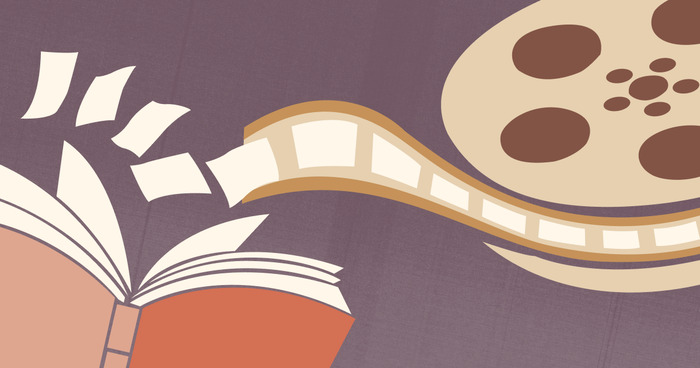

When You Change Just To Make Some Change
Adaptations are often defended with a familiar refrain: they are allowed to be different. On its surface, that argument is correct. No adaptation should be expected to replicate its source verbatim, nor should it attempt to, since different mediums demand different structures, pacing, and priorities. The issue is not the presence of change, but the intent and consequence of it, particularly when an adaptation positions itself not as an interpretation, but as the version that matters most.
This tension becomes unavoidable when an adaptation grows more culturally dominant than the work it is based on. The Marvel Cinematic Universe illustrates this problem clearly. The MCU diverging from Marvel Comics is not inherently a flaw; it was always designed as its own continuity. The problem emerges when audiences begin treating it as the definitive form of Marvel, and that perception is reinforced when studios market and develop future stories primarily for those who only know the adaptation. When creative decisions are guided by what adaptation-only audiences recognize, the relationship between source and adaptation quietly reverses, and the original work becomes secondary to the version derived from it.
Not all adaptations operate this way. Franchises such as The Lord of the Rings and Harry Potter make notable changes, sometimes compressing or omitting large portions of their source material, but they do so without undermining the core identity of the original stories. Their themes, character arcs, and moral frameworks remain intact, allowing the films to function as gateways rather than replacements. Even when the movies dominate popular awareness, the existence and authority of the source material remain intact.
The question, then, is not whether adaptations are allowed to change things, but how much they can change before they become something else entirely while still using the same name. At what point does reinterpretation turn into replacement? The line is not always clear, but it becomes difficult to ignore when the foundational intent of a work is altered while its branding, iconography, and recognition remain unchanged. When familiarity is preserved, but meaning is not, the adaptation ceases to be a translation and becomes a rewrite.
This issue is further complicated by the uncomfortable truth that fidelity and quality are not synonymous. A work can fail as an adaptation while still succeeding as a piece of entertainment, just as a faithful adaptation can be technically sound and emotionally empty. This creates a critical dilemma. If an adaptation works on its own terms but misrepresents the work it is adapting, how should it be judged, and how should it be framed for audiences who may never encounter the original version at all?
These tensions are especially pronounced in Western media, where long-running franchises are often treated as endlessly flexible brands rather than cohesive bodies of work. Reinvention is frequently prioritized over preservation, and familiarity is often valued more than context or intent. In contrast, other media traditions tend to maintain clearer boundaries between original works and their adaptations, allowing reinterpretations to exist without displacing the source they are derived from.
Adaptations are not the problem, and neither is change. The problem arises when change exists for its own sake, when difference is treated as virtue rather than consequence. When an adaptation forgets that it is built on something preexisting, it risks hollowing out the foundation that made the story worth adapting in the first place. The name may remain the same, but the meaning beneath it quietly fades.